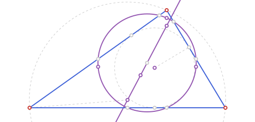
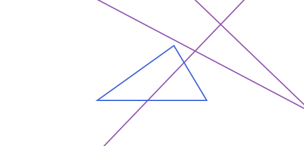
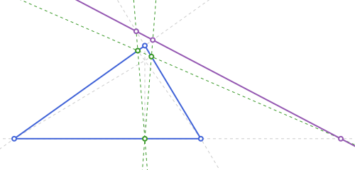
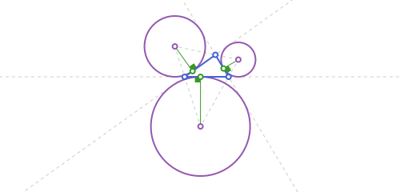

Triangles & Triangle Centers
EGTriangle is three points, indexed t[1], t[2], t[3] (its own type, <: EGPolygon — see EuclideanGeometry.jl for the full hierarchy). This page is organized the same way triangle geometry usually is: the basic measurements, the four classical centers and how the Euler line ties three of them together, the excircles, barycentric coordinates, and then the (long) catalogue of further named centers and derived triangles that classical triangle geometry has accumulated.
Throughout, the running example is the scalene triangle:
using EuclideanGeometry
A, B, C = EGPoint(0.0, 0.0), EGPoint(8.0, 0.0), EGPoint(3.0, 6.0)
t = EGTriangle(A, B, C)
area(t), perimeter(t), is_degenerate(t)(24.0, 22.518453608406023, false)The four classical centers, and the Euler line
| Function | Center | Defined as |
|---|---|---|
centroid | G | average of the three vertices |
circumcenter | O | equidistant from the three vertices (circumcircle passes through them) |
incenter | I | equidistant from the three sides (incircle touches them) |
orthocenter | H | intersection of the three altitudes |
G, O and H are always collinear — that line is the euler_line — and G divides OH in a fixed 1:2 ratio (H = O + 3(G - O)). I is not on the Euler line in general (it only coincides with the others for an equilateral triangle).
G, O, I, H = centroid(t), circumcenter(t), incenter(t), orthocenter(t)
el = euler_line(t)
npc = nine_point_circle(t)
circumradius(t) # the radius of circumcircle(t), same as npc.r * 24.366062299143245
nine_point_circle passes through the three edge midpoints, the three altitude feet, and the three midpoints of segment [vertex, H] (nine points in total, though only the circle itself — not the nine points — is what the function returns). Its center, nine_point_center, is the midpoint of O and H, and it always sits on the Euler line too — its radius is exactly half the circumradius. euler_points returns that last group of three (the midpoints of [H, vertex]) directly, for when you need those specific points rather than just the circle.
euler_points(t)
npc.center == nine_point_center(t), npc.r ≈ circumradius(t) / 2(true, true)Two more lines are naturally associated with this configuration: orthic_axis, the radical axis of the circumcircle and the nine-point circle (always perpendicular to the Euler line), and brocard_axis, the line through O and the symmedian point — whose polar line with respect to the circumcircle is, in turn, the lemoine_axis.
orthic_axis(t), brocard_axis(t), lemoine_axis(t)(EGLine([-5.399999999999997, 8.799999999999997] -> [-5.774999999999997, 8.299999999999997]), EGLine([4.0, 1.75] -> [3.2470588235294118, 2.2588235294117647]), EGLine([-13.380191693290733, 13.495207667731629] -> [-13.889015222702497, 12.742266491261041]))

Excenters and excircles
Where the incircle is tangent to all three sides from inside the triangle, each excircle is tangent to one side and to the extensions of the other two, from outside. There are three of them, one opposite each vertex — excenters and exradii return all three as a named tuple (A=..., B=..., C=...), and excircles the actual circles.
ex = excenters(t)
exc = excircles(t)
er = exradii(t)
exc.A.r == er.A # excircles(t).A already has radius exradii(t).Atrue
Barycentric coordinates
Every point of the plane can be written as a weighted average of the three vertices, p = αA + βB + γC with α+β+γ = 1 — these weights (α,β,γ) are its barycentric coordinates with respect to t. barycentric_point goes from coordinates to a point (weights don't need to be normalized — they're rescaled internally); barycentric_coordinates goes the other way.
barycentric_point(t, 1.0, 1.0, 1.0) # (1:1:1) is always the centroid
barycentric_coordinates(t, centroid(t)) # (1/3, 1/3, 1/3)(0.3333333333333334, 0.3333333333333333, 0.3333333333333333)Most of the named centers below have simple, well-known barycentric coordinates (the incenter is (a:b:c) in the side lengths, for instance) — barycentric_point is the easiest way to construct a center directly from a formula found in a reference like the Encyclopedia of Triangle Centers, without rederiving it in Cartesian coordinates.
Trilinear coordinates
Trilinear coordinates (x:y:z) are the other classical coordinate system for a triangle: unlike barycentric weights, they're proportional to the actual signed perpendicular distances from the point to the three sides. trilinear_coordinates returns those distances directly (not just up to a common scale); trilinear_point goes the other way, from a trilinear ratio to a point (internally converting to barycentric via (a·x : b·y : c·z)).
x, y, z = trilinear_coordinates(t, incenter(t))
x, y, z, inradius(t) # x == y == z == inradius(t): (1:1:1) is always the incenter(2.1315850917081556, 2.1315850917081556, 2.1315850917081556, 2.1315850917081556)trilinear_point(t, 1.0, 1.0, 1.0) ≈ incenter(t)trueMany named centers found in a reference like the Encyclopedia of Triangle Centers are given as trilinears rather than barycentrics — kenmotu_point below is one example — so having both conversions on hand avoids rederiving one from the other by hand.
Vertex-indexed lines
Four of the classical triangle lines — the altitude, median, and internal and external angle bisectors — plus the perpendicular bisector of the opposite side and the angle trisectors, all come in threes, one per vertex. Rather than one function per vertex, each is a single function taking the triangle and a vertex index i ∈ {1,2,3}:
| Function | The line through t[i]... |
|---|---|
altitude(t, i) | ...perpendicular to the opposite side (concurs at orthocenter) |
median(t, i) | ...through the opposite side's midpoint (concurs at centroid) |
bisector(t, i) | ...the internal angle bisector (concurs at incenter) |
bisector_ext(t, i) | ...the external angle bisector (perpendicular to bisector(t, i)) |
mediator(t, i) | the perpendicular bisector of the side opposite t[i] (concurs at circumcenter) |
trisector(t, i) | the 2 rays from t[i] trisecting the interior angle there |
altitude(t, 1), median(t, 1), bisector(t, 1)(EGLine([0.0, 0.0] -> [-6.0, -5.0]), EGLine([0.0, 0.0] -> [5.5, 3.0]), EGLine([0.0, 0.0] -> [1.4472135954999579, 0.8944271909999159]))on_line(orthocenter(t), altitude(t, 1)), on_line(centroid(t), median(t, 1)), on_line(incenter(t), bisector(t, 1))(true, true, true)bisector_ext(t, i) and mediator(t, i) complete the set — the external bisector is always perpendicular to the internal one at the same vertex, and the mediator (the perpendicular bisector of the opposite side) is what all three concur at to give the circumcenter:
is_perpendicular(bisector(t, 1), bisector_ext(t, 1))trueon_line(circumcenter(t), mediator(t, 1)), on_line(circumcenter(t), mediator(t, 2)), on_line(circumcenter(t), mediator(t, 3))(true, true, true)The free function angle_trisectors(vertex, p1, p2) (see Angles on the previous page) is what trisector(t, i) is built from; use it directly when the two rays don't come from a triangle's own vertices.
Further named centers
Beyond the classical four, this package implements a large catalogue of triangle centers and associated circles from classical triangle geometry. Two, as a sample:
Na = nagel_point(t) # point where the excircle-tangency cevians meet
Ge = gergonne_point(t) # point where the incircle-tangency cevians meet[3.280260799020241, 2.254676044407567]The rest, grouped by what they're built from:
All of these take the EGTriangle as their (only, or first) argument and return an EGPoint, an EGCircle2, an EGLine, or — where there's naturally more than one, like soddy_circles or three_apollonius_circles — a tuple or named tuple. See the API Reference for exact signatures.
steiner_line(t, p) is closely related to simson_line(t, p): reflecting (rather than projecting) p across the three side-lines gives three points that are collinear exactly when p is on the circumcircle — and that Steiner line always passes through the orthocenter, parallel to the Simson line of the same point.
p_on_circ = polar_point(circumradius(t), 0.7, circumcenter(t)) # any point on t's circumcircle
sl = simson_line(t, p_on_circ)
stl = steiner_line(t, p_on_circ)
on_line(orthocenter(t), stl), is_parallel(sl, stl)(true, true)orthopole(l, t) is the point where the three perpendiculars — one per vertex, dropped from that vertex's projection onto l, to the opposite side — always concur. pedal_triangle(t, p) (the feet of the perpendiculars from p to the three side-lines) generalizes orthic_triangle/contact_triangle, which are just the pedal triangles of the orthocenter/incenter:
orthopole(EGLine(t[2], t[3]), t) isa EGPoint
pedal_triangle(t, incenter(t)) ≈ contact_triangle(t)truebrocard_midpoint(t) # midpoint of the two Brocard points (Kimberling X(39))
kenmotu_point(t) # X(371): common vertex of 3 congruent inscribed squares
macbeath_point(t) # X(264): isotomic conjugate of the circumcenter[3.367484209662866, 2.251661061438766]symmedian_point is the fourth cevian-intersection point, built from barycentric coordinates a² : b² : c² the same way nagel_point/ gergonne_point are built from their own:
symmedian_point(t)[3.2470588235294118, 2.2588235294117647]isogonal_conjugate(t, p) reflects each cevian vertex -> p across the internal bisector at that vertex; isotomic_conjugate(t, p) instead reflects the cevian's foot across the opposite side's midpoint. Both are involutions — applying either twice returns p — and isogonal_conjugate swaps orthocenter↔circumcenter and centroid↔symmedian point while fixing the incenter:
isogonal_conjugate(t, isogonal_conjugate(t, incenter(t))) ≈ incenter(t) # incenter is a fixed point
isogonal_conjugate(t, orthocenter(t)) ≈ circumcenter(t)
isogonal_conjugate(t, centroid(t)) ≈ symmedian_point(t)trueisotomic_conjugate(t, isotomic_conjugate(t, incenter(t))) ≈ incenter(t)trueanticomplement(t, p) is the inverse of complement(t, p) — homothety by -2 instead of -1/2 about the centroid:
anticomplement(t, complement(t, incenter(t))) ≈ incenter(t)trueBuilt from the incenter/excenters: spieker_center (the incenter of the medial triangle) and spieker_circle (its incircle); bevan_point (circumcenter of the excentral triangle); and de_longchamps_point (the orthocenter reflected across the circumcenter, so it always lies on the Euler line):
spieker_center(t) ≈ incenter(medial_triangle(t))
spieker_circle(t) ≈ incircle(medial_triangle(t))
bevan_point(t) ≈ circumcenter(excentral_triangle(t))
on_line(de_longchamps_point(t), euler_line(t))trueThe two isodynamic_points are where the three three_apollonius_circles (one per vertex, for points whose distances to the other two vertices are in the same ratio as the two sides meeting at that vertex) all meet:
apo = three_apollonius_circles(t)
iso1, iso2 = isodynamic_points(t)
all(c -> distance(c.center, iso1) ≈ c.r, apo), all(c -> distance(c.center, iso2) ≈ c.r, apo)(true, true)The Brocard configuration: first_brocard_point/ second_brocard_point are the two points seeing all three sides at the same brocard_angle; brocard_circle passes through both (and through the symmedian point):
Om1, Om2 = first_brocard_point(t), second_brocard_point(t)
bc = brocard_circle(t)
rad2deg(brocard_angle(t)), distance(bc.center, Om1) ≈ bc.r, distance(bc.center, Om2) ≈ bc.r(29.45367272692091, true, true)Named auxiliary circles: conway_points/conway_circle (extend the two sides at each vertex outward by the length of the opposite side; all 6 endpoints lie on a circle centered at the incenter), taylor_circle (through the 6 taylor_points), first_lemoine_points/first_lemoine_circle and second_lemoine_circle (both centered differently, both built from the symmedian point), and van_lamoen_circle (through the 6 van_lamoen_points):
on_circ(p, c) = distance(p, c.center) ≈ c.r # "p is exactly on c", not just inside the disk
all(p -> on_circ(p, conway_circle(t)), conway_points(t)),
all(p -> on_circ(p, taylor_circle(t)), taylor_points(t)),
all(p -> on_circ(p, first_lemoine_circle(t)), first_lemoine_points(t)),
symmedian_point(t) ≈ second_lemoine_circle(t).center,
all(p -> on_circ(p, van_lamoen_circle(t)), van_lamoen_points(t))(true, true, true, true, true)mixtilinear_incircle(t, i) is tangent to the two sides through t[i] and internally tangent to the circumcircle; soddy_circles (inner/outer) and soddy_line extend three_tangent_circles (see Tangency & Apollonius Problems):
mixt = mixtilinear_incircle(t, 1)
sc = soddy_circles(t)
on_line(sc.inner.center, soddy_line(t)), on_line(sc.outer.center, soddy_line(t))(true, true)second_fermat_point is built exactly like fermat_point but with the three equilateral triangles erected inward instead of outward; fermat_axis is the line through both:
fermat_axis(t) # EGLine(fermat_point(t), second_fermat_point(t))EGLine([3.2897184800774584, 2.2544606099920776] -> [-0.6060124097899183, 2.652887632819417])poncelet_point(t, p) uses a striking fact about any 4 points in general position (here, t's 3 vertices plus a 4th, p): the nine-point circles of the 4 triangles obtained by leaving out one point each time always share a single common point.
poncelet_point(t, EGPoint(5.0, -2.0))[3.947058823529412, -0.011764705882353454]thebault_circles builds the two circles of the classical Sawayama–Thébault configuration: given a point p on side [t[2], t[3]], each is tangent to the cevian t[1] -> p, to that side, and internally tangent to the circumcircle — one nestled against t[2], the other against t[3].
D = B + 0.4 * (C - B) # a point on side [B, C]
th = thebault_circles(t, D)(near_b = EGCircle2([5.371112263108153, -0.0859769259815697], 2.0746085878974125), near_c = EGCircle2([2.4345060682541315, 3.3019775631070742], 2.1616563458939564))Remarkably, no matter where p sits on the side, the incenter always lies exactly on the segment joining the two circles' centers (the theorem the construction is named for):
on_line(incenter(t), EGLine(th.near_b.center, th.near_c.center))truethree_tangent_circles is the simpler configuration soddy_circles is itself built from: one circle per vertex, radius equal to the tangent length from that vertex to the incircle, each pair meeting exactly where the incircle touches the side between them.
base = three_tangent_circles(t)
distance(base[1].center, base[2].center) ≈ base[1].r + base[2].r # pairwise externally tangenttruetaylor_points is the full 6-point construction behind taylor_circle: project each vertex of the orthic_triangle onto each of the two sides not used to define it — all 6 results are concyclic.
length(taylor_points(t)) # 66van_lamoen_points is another 6-concyclic-points theorem: the circumcenters of the 6 small triangles the 3 medians cut t into (each formed by one vertex, one non-adjacent side midpoint, and the centroid) always lie on a common circle, van_lamoen_circle.
length(van_lamoen_points(t)) # 66complement(t, p) and anticomplement(t, p) are the homotheties of ratio -1/2 and -2 about the centroid — inverses of each other. Applied to t's own vertices they give the medial_triangle and the anticomplementary triangle (see Derived triangles) respectively:
complement(t, A) ≈ midpoint(B, C)truekenmotu_circle is centered at the kenmotu_point, with radius √2·a·b·c / (4·Area + a²+b²+c²) — it passes through the 6 points where the three congruent inscribed squares of the Kenmotu configuration meet the sides.
kenmotu_circle(t)EGCircle2([3.5187969924812026, 2.0751879699248117], 2.2284070439510018)feuerbach_points is the excircle analogue of feuerbach_point: the nine-point circle is not just internally tangent to the incircle, it's also externally tangent to each of the three excircles, at these three points.
feuerbach_points(t)(A = [5.352914605817791, 3.2792670676871545], B = [1.5211275575918342, 3.0467856891260245], C = [3.740334969430836, -0.04476130080446383])kiepert_hyperbola is the unique rectangular hyperbola through t's 3 vertices, its centroid and its orthocenter (built directly via conic_through_points on those 5 points); kiepert_parabola has focus Kimberling center X(110) and directrix the euler_line (undefined for an isosceles triangle, where X(110) doesn't exist):
kiepert_hyperbola(t) isa EGHyperbola2
kiepert_parabola(t) isa EGParabola2trueSteiner ellipses
Two more ellipses are naturally associated with a triangle, both centered at the centroid: the Steiner inellipse, the (unique, maximum-area) ellipse inscribed in the triangle and tangent to the sides at their midpoints, and the Steiner circumellipse, the (unique, minimum-area) ellipse through the three vertices. steiner_inellipse and steiner_circumellipse build them.
inell = steiner_inellipse(t)
circumell = steiner_circumellipse(t)
inell.center ≈ circumell.center ≈ centroid(t)trueThe circumellipse is always exactly the image of the inellipse under a homothety of ratio -2 about the centroid — the same ratio that relates a triangle to its own medial_triangle:
circumell.a ≈ 2 * inell.a, circumell.b ≈ 2 * inell.b(true, true)steiner_inellipse finds its foci via Marden's theorem: representing the vertices as complex numbers z1, z2, z3, the foci are the two roots of the derivative of (z-z1)(z-z2)(z-z3). steiner_circumellipse is built via conic_through_points, using the three vertices together with the reflections of two of them across the centroid (also on the ellipse, since any conic centered at a point is symmetric about it).
More named inellipses
Beyond Steiner's, five more classical inscribed ellipses:
| Function | Center | Foci |
|---|---|---|
lemoine_inellipse | midpoint of centroid & symmedian point | centroid, symmedian point |
brocard_inellipse | midpoint of the two Brocard points | second/first Brocard point |
macbeath_inellipse | midpoint of circumcenter & orthocenter | circumcenter, orthocenter (acute triangles only) |
mandart_inellipse | mittenpunkt | — (fit through 5 points instead, see below) |
orthic_inellipse | symmedian_point | — (acute triangles only) |
The first three are bifocal ellipses (see Conics: Ellipse, Parabola & Hyperbola): each is pinned down by requiring it pass through one specific extra point (a vertex of a particular cevian triangle). mandart_inellipse and orthic_inellipse instead fit a conic through 5 points directly via conic_through_points: the 3 vertices of the extouch_triangle/orthic_triangle it's tangent to, plus the point-reflections of 2 of them through the known center (also on the ellipse, since it's centrally symmetric about its own center).
mandart_inellipse(t).center ≈ mittenpunkt(t)truelemoine_inellipse(t).center ≈ midpoint(centroid(t), symmedian_point(t))
brocard_inellipse(t).center ≈ midpoint(first_brocard_point(t), second_brocard_point(t))truemacbeath_inellipse(t).center ≈ midpoint(circumcenter(t), orthocenter(t)) # requires an acute triangle
orthic_inellipse(t).center ≈ symmedian_point(t) # also acute-onlytrueDerived triangles
These take an EGTriangle and return another EGTriangle built from it:
| Function | Vertices are... |
|---|---|
medial_triangle | the three edge midpoints |
anticomplementary_triangle | B+C-A, C+A-B, A+B-C — the inverse of medial_triangle (t is its medial triangle) |
orthic_triangle | the three altitude feet |
reflection_triangle | each vertex reflected across its opposite side line (unlike orthic_triangle, which projects instead) |
contact_triangle | the three points where the incircle touches the sides |
extouch_triangle | the three points where the excircles touch the sides |
excentral_triangle | the three excenters |
tangential_triangle | tangents to the circumcircle at each vertex, pairwise intersected |
napoleon_triangle | centers of equilateral triangles erected on each side (napoleon_point is its centroid — by Napoleon's theorem, always t's own centroid too) |
morley_triangle | intersections of adjacent angle trisectors |
pedal_triangle | projections of a chosen point onto the three sides |
cevian_triangle / circumcevian_triangle | feet of cevians through a chosen point (extended to the circumcircle, for the latter) |
mt = medial_triangle(t)EGTriangle([5.5, 3.0], [1.5, 3.0], [4.0, 0.0])The medial triangle is always similar to t at half scale, sharing its centroid — and its own circumcircle is exactly t's nine-point circle.
anticomplementary_triangle(mt) ≈ t # medial_triangle and anticomplementary_triangle are inversestrueoh = orthic_triangle(t) # altitude feet (projections)
rt = reflection_triangle(t) # each vertex reflected, instead of projected, across the opposite side
distance(t[1], rt[1]) ≈ 2 * distance(t[1], oh[1]) # reflecting doubles the projected distancetruect = contact_triangle(t) # incircle touch points
et = extouch_triangle(t) # excircle touch points
et_center = excentral_triangle(t) # the 3 excenters, as a triangle
tt = tangential_triangle(t) # tangent lines to the circumcircle at each vertex, intersected pairwise
on_line(circumcenter(t), EGLine(t[1], tt[1])) == false # circumcenter isn't generally on a tangent linetruenp_tri = napoleon_triangle(t) # always equilateral (Napoleon's theorem)
distance(np_tri[1], np_tri[2]) ≈ distance(np_tri[2], np_tri[3]) ≈ distance(np_tri[3], np_tri[1])
napoleon_point(t) ≈ centroid(t) # Napoleon's theorem: same point either waytruemor = morley_triangle(t) # always equilateral (Morley's trisector theorem)
distance(mor[1], mor[2]) ≈ distance(mor[2], mor[3]) ≈ distance(mor[3], mor[1])truecev = cevian_triangle(t, incenter(t)) # feet of the cevians through the incenter
ccev = circumcevian_triangle(t, incenter(t)) # same cevians, extended to the circumcircle
on_segment(cev[1], EGSegment(t[2], t[3])), on_line(ccev[1], EGLine(t[1], incenter(t)))(true, true)Inscribed squares
square_inscribed(t, i) builds the square with one side on the side opposite t[i] and its other two vertices exactly on the two sides through t[i] — returned as an EGQuadrilateral. There are 3 such squares (one per side, hence the vertex index):
sq = square_inscribed(t, 1)
distance(sq[1], sq[2]), distance(sq[2], sq[3]) # equal: it really is a square(3.4393760040689854, 3.4393760040689854)Its side length is a*h / (a+h) (a the base length, h the corresponding height) regardless of how oblique the triangle is — a classical fact that falls out of simple similar-triangles reasoning once you set up coordinates with the base on an axis.
Triangles built on a segment
A different family of constructors, analogous to square_on_segment (see Polygons & Bounding Boxes): each takes a base segment [a, b] and returns the classical named triangle with that segment as one side (or, for the two "hypotenuse" ones, as the hypotenuse), plus a ccw::Bool=true keyword picking which side of [a, b] the third vertex falls on.
| Function | Triangle |
|---|---|
equilateral_triangle_on_segment | equilateral, side [a, b] |
isosceles_triangle_on_segment | isosceles, base [a, b], given leg length |
triangle_30_60_90_on_segment | right triangle, hypotenuse [a, b], angles 30°/60° at a/b |
isosceles_right_triangle_on_segment | isosceles right triangle, hypotenuse [a, b] (via Thales' theorem) |
golden_triangle_on_segment | isosceles 72°-72°-36°, base [a, b] |
golden_gnomon_on_segment | isosceles 36°-36°-108° (the golden gnomon), base [a, b] |
egyptian_triangle_on_segment | 3-4-5 right triangle, [a, b] the "4" side, right angle at b |
p1, p2 = EGPoint(0.0, 0.0), EGPoint(6.0, 0.0)
golden_triangle_on_segment(p1, p2) # apex angle 36°, both base angles 72°EGTriangle([0.0, 0.0], [6.0, 0.0], [2.9999999999999996, 9.233050611525757])egyptian_triangle_on_segment(p1, p2) # legs 4:3 (here 6:4.5), hypotenuse 5 (here 7.5)EGTriangle([0.0, 0.0], [6.0, 0.0], [6.0, 4.5])eq = equilateral_triangle_on_segment(p1, p2)
distance(eq[1], eq[2]), distance(eq[2], eq[3]), distance(eq[3], eq[1]) # all 3 equal(6.0, 5.999999999999999, 6.000000000000001)gnomon = golden_gnomon_on_segment(p1, p2) # base angles 36°, apex angle 108°
rad2deg(angle_at(gnomon[1], gnomon[3], gnomon[2])), rad2deg(angle_at(gnomon[3], gnomon[1], gnomon[2]))(36.0, 108.0)iso = isosceles_triangle_on_segment(p1, p2, 5.0) # base [p1,p2], legs of length 5
distance(iso[1], iso[3]) ≈ 5.0, distance(iso[2], iso[3]) ≈ 5.0(true, true)r306090 = triangle_30_60_90_on_segment(p1, p2) # hypotenuse [p1,p2]
rad2deg(angle_at(r306090[1], r306090[2], r306090[3])), rad2deg(angle_at(r306090[2], r306090[1], r306090[3]))(30.000000000000004, 59.99999999999999)isr = isosceles_right_triangle_on_segment(p1, p2) # hypotenuse [p1,p2], via Thales
rad2deg(angle_at(isr[3], isr[1], isr[2])) # 90°: the right angle sits opposite the hypotenuse90.0